Projects
Exploring and fun.
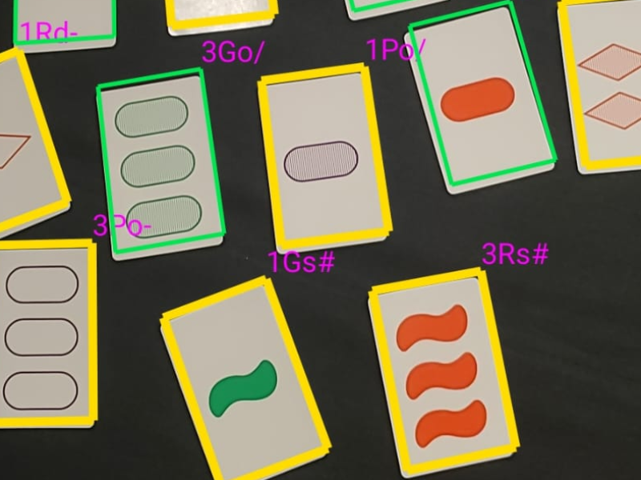
SETplayer
A real-time phone app for SET “assistance.”
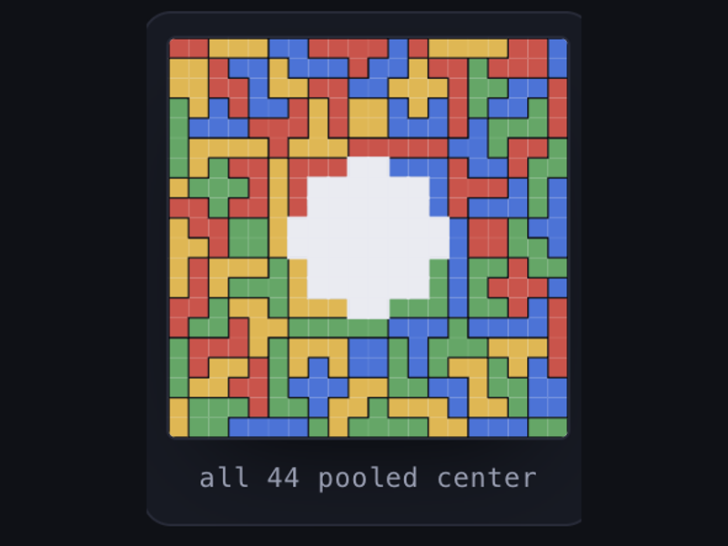
Blokus: can we all win?
Searching for solutions.
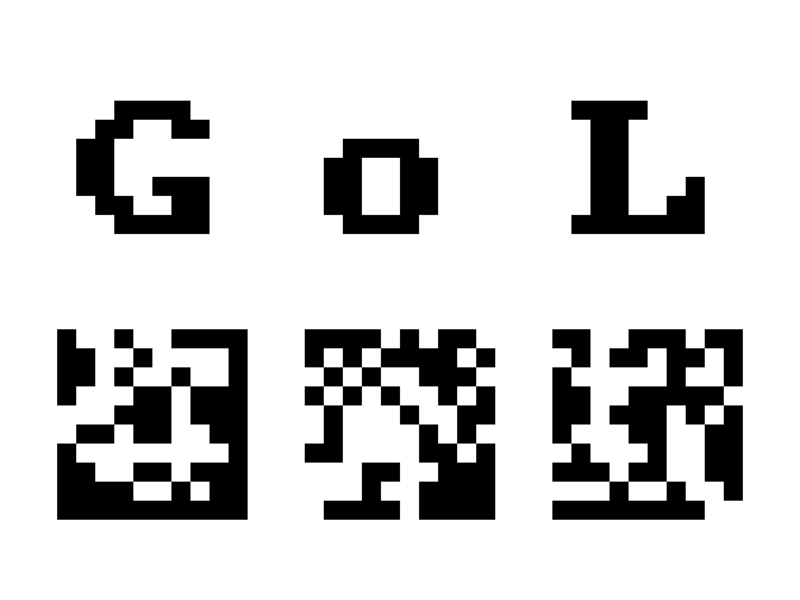
Reverse Game of Life Font
Find a starting pattern that evolves into a letter: a font that grows itself.
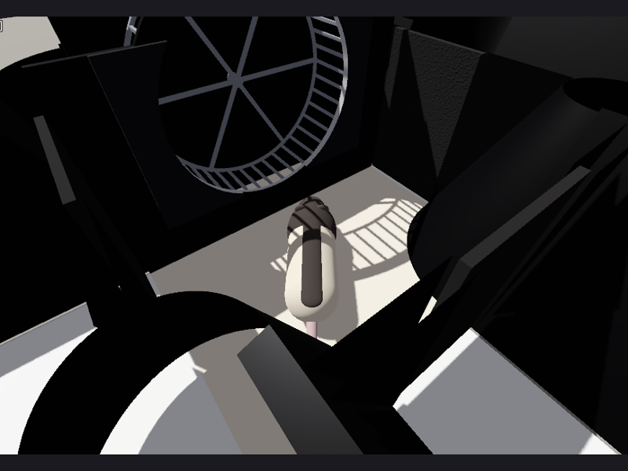
RatTADStask
A simulation for playing the three-arm delayed sequence task.
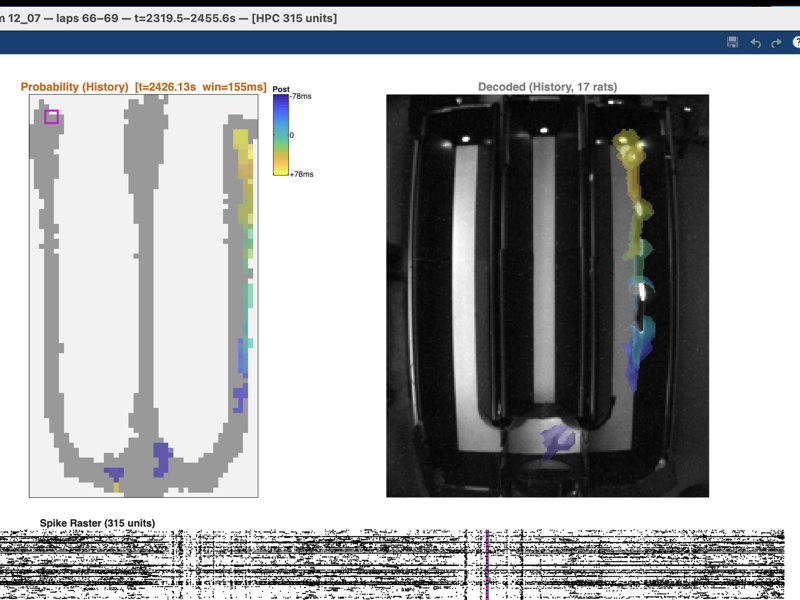
Data Browser for TADS
A MATLAB browser for exploring large-scale neural recordings from rats performing the TADS task.
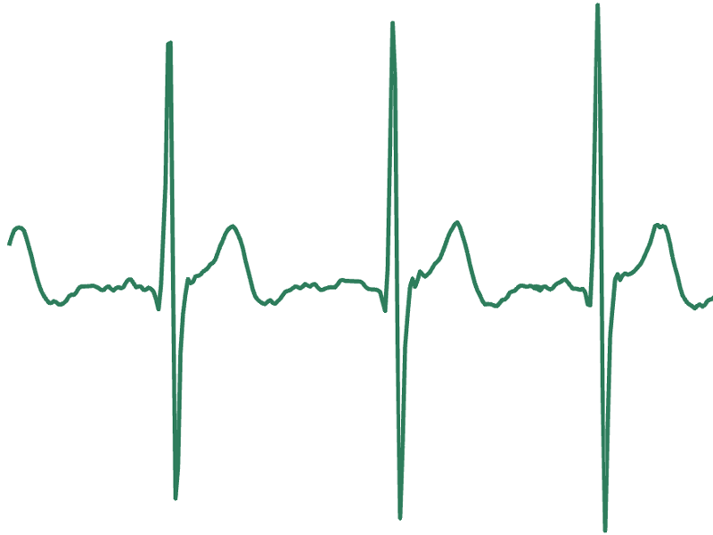
Heart-rate biofeedback
Streaming my own ECG from a chest strap to breathe in sync with my heart.
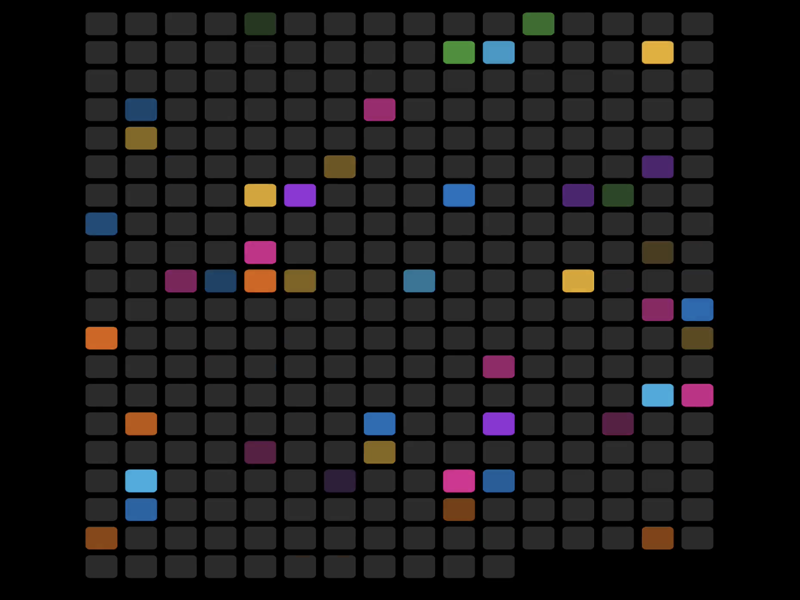
Hearing the hippocampus
Neural data turned into sound: decoded position becomes pitch, so running sounds like a scale and replay like a quick arpeggio.
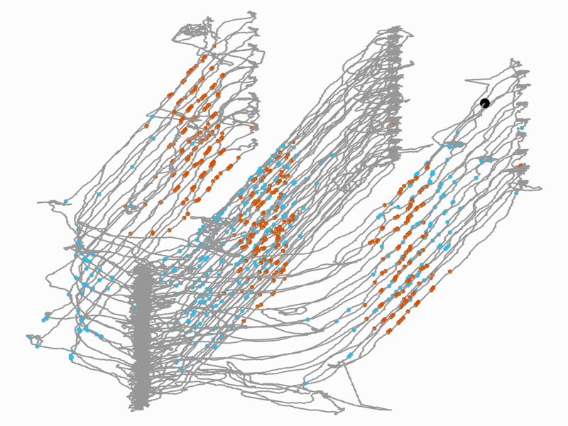
Place fields in 3D
A rat's path drawn through space and time, with each neuron's spikes lighting up where it fires.
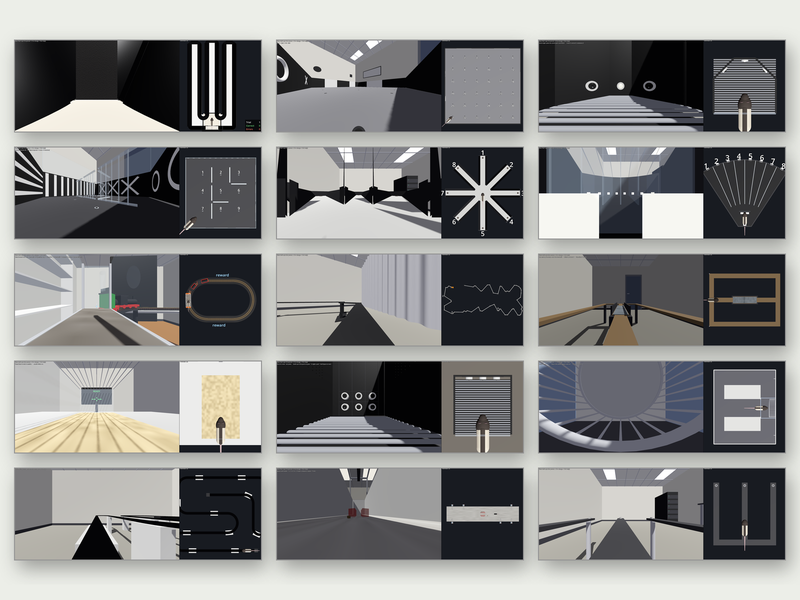
Task Sims
Neuroscience experiments you can play.
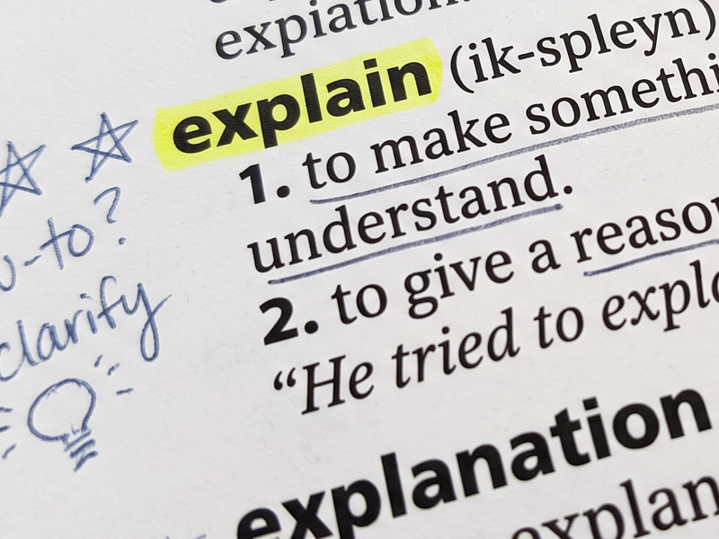
Explainers
An ongoing project to build clear visual explanations of neuroscience, from the neuron up.
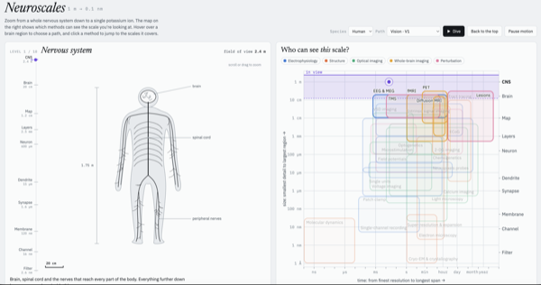
Neuroscales
Zoom from the whole brain down to ion channels, and see which methods can measure each scale.
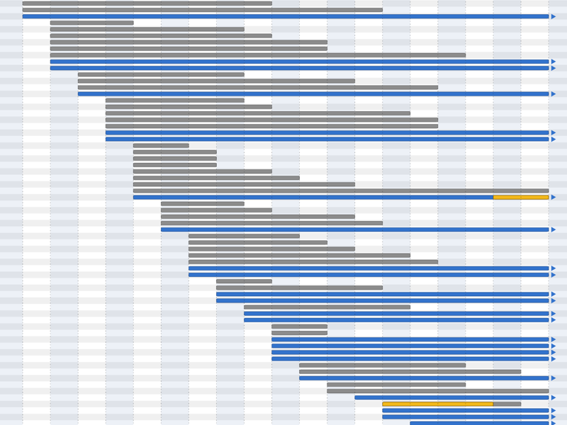
Janelia history
Every Janelia lab since 2006, reconstructed from the Wayback Machine.
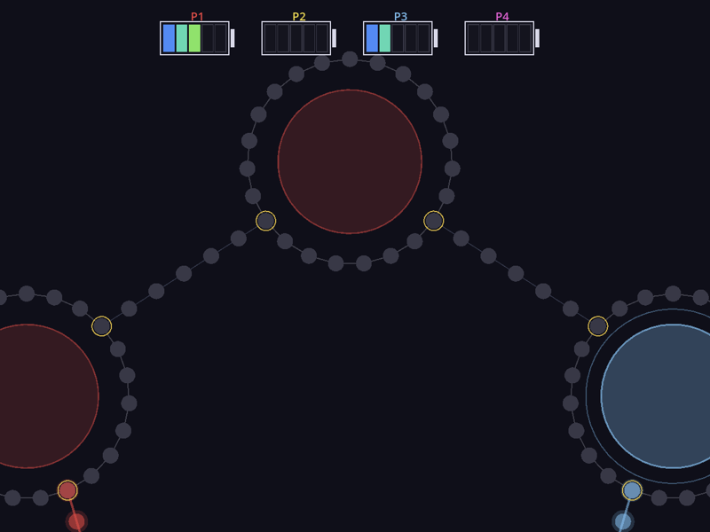
Virtual Beam Bandit
A virtual environment for playing my brother's LED arcade game.
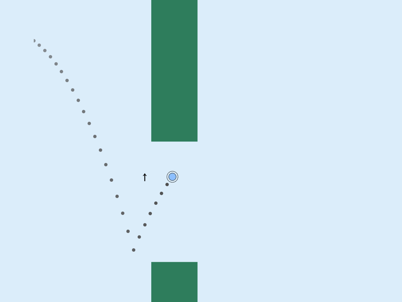
Flappy RL
Teaching a neural net to play Flappy Bird, written twice so you can compare line by line.
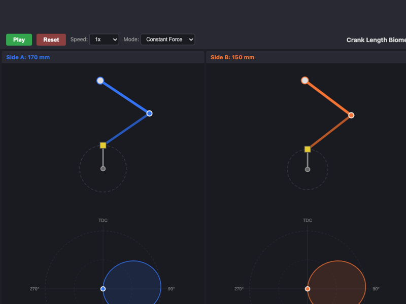
Pedal stroke simulator
Leg linkage and torque around the pedal stroke, animated.
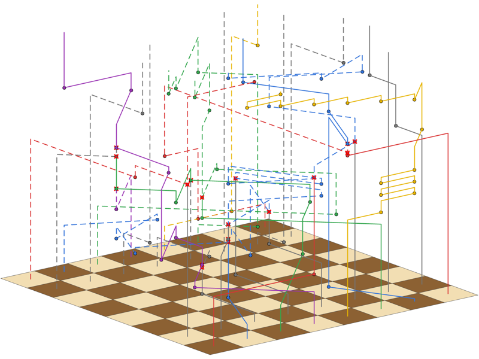
Chess worldlines
Every chess game as a 3D sculpture: pieces trace paths through time.
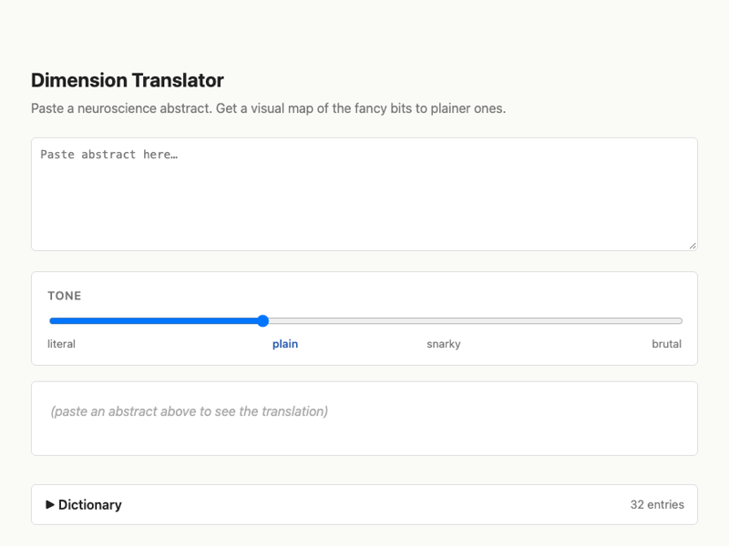
Hyperemover
Paste a neuroscience abstract and strip out the buzzwords: plain English, snarky, or brutal.